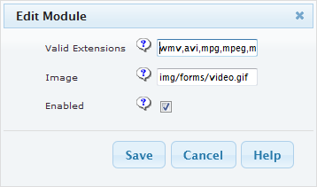
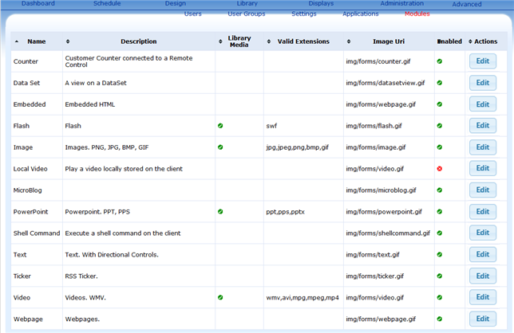
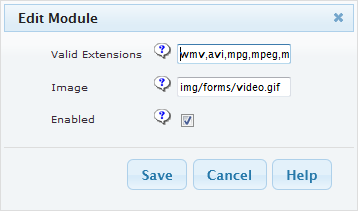

Content Without Extension:
Admininstrator may enable or disable the content for user access.

Content With Extension:
Administrator may add other valid files extensions that are supported by the Xibo Client Display e.g. mp4.

Xibo server content handling is done by Modules.
Click "Administration -> Modules" load the modules parameters for edit.

Xibo server modules table contains parameters for user edit.
System given Name for the specific module.
A breif description of the modules.
Indicated if the content is saved in the Xibo Library. Unchecked indicate the specific content is only save with the Layout-Regions.
Valid file extensions that are supported by the specific module.
Link to the module icon for UI display, usually leave as it.
System administrator may enable/disable the specific content for Xibo user access.
Click Edit button for the specific content type load the following form for user changes.
Admininstrator may enable or disable the content for user access.
Administrator may add other valid files extensions that are supported by the Xibo Client Display e.g. mp4.
